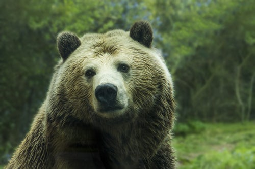

Aqui les presentare a mi mascota exótica, Su nombre es YOGI
Yogi, es un oso pardos (Ursus arctos) Lo rescate de unos casadores furtivos cuando apenas era un cachorro, su madre lastimosamente fue asesinada
En el siguiente link podrás encontrar más fotos yogi fotos
| ALIMENTOS | HABITOS |
|---|---|
| Salmon | Trepar arboles | Fruta | Perseguir aves |
Otros temas:
Otros tipos de osos: